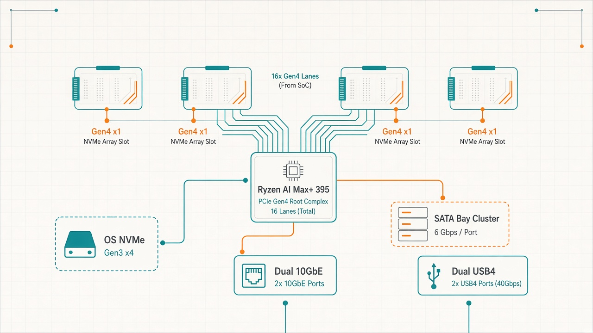
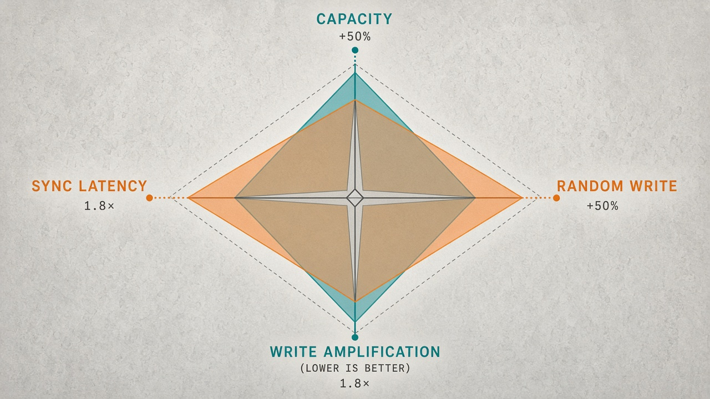

Choose RAID10 if…
Best when IOPS and sync matter
- 1.8×Small random writes (39.0K vs 21.3K IOPS) — VM disks, DB volumes
- 1.9×Sync-write / fsync latency — transactional workloads
- ·Simpler rebuilds; one failure per mirror pair
Tiered local-AI NAS · Minisforum N5 MAX · 2026-09
The N5 MAX as a tiered local-AI NAS / appliance — not a generic NAS: hot tier multi-NVMe array (4 now → 5-wide) for VMs, model weights, RAG indexes; 128 GB unified memory (CPU+iGPU shared — not discrete VRAM); cold tier SATA/HDD bays for bulk archive. Array NVMe is Gen4 ×1, so ZFS layout + lane tax shape cold model load and MoE streaming off the hot pool. Working chapter (provisional): how to choose the hot-tier layout — four-disk RAID10 vs RAIDZ1. Figures below are from preliminary storage runs — not Protocol B sealed cells. No invented tok/s; treat as under review.
Recommendations · storage layouts
Preliminary four-disk storage chapter only — under review. Use these cards to compare layouts, not as a final seal.
Hardware · media kit
Build photos from the hot-tier kit — 4× Lexar NM790 4TB and the open N5 MAX chassis. A clean full-chassis exterior still helps as the true hero shot.


What’s measured so far · provisional
More capacity, or more random-write throughput. RAIDZ1 wins usable space and sequential reads; RAID10 wins small random writes and sync latency. The physical rail shows why: RAIDZ1 simply moves less data per write.
Hardware topology · Strix Halo PCIe fan-out
16 Zen 5 cores, 128 GB unified LPDDR5X, 16 general-purpose PCIe Gen4 lanes plus a dedicated USB4 rail. A Gen4 lane carries 1.97 GB/s — allocated as read from the live links:
| Function | Controller | Link | Throughput |
|---|---|---|---|
| 4× NVMe (array under test) | Lexar NM790 4TB | Gen4 ×1 ea | 1.97 GB/s ea |
| 1× NVMe (OS) | Intel 760p | Gen3 ×4 | 3.94 GB/s |
| 5× SATA bays | JMicron JMB58x | Gen3 ×2 shared | 1.97 GB/s |
| 2× Ethernet | Realtek RTL8127 | Gen4 ×1 ea | 10 GbE ea |
| 2× USB4 / TB5 | Intel JHL9580 | Gen4 ×4 ea | 7.88 GB/s ea |
Scientific methodology
Displayed storage numbers come from preliminary result.json artifacts via bin/dendrite-report (under review — not Protocol B sealed). Sub-noise deltas are suppressed from 2-run repeatability.
Sequential / random / sync throughput & IOPS under primarycache=none as the cold-pool control.
Independent byte counters. Physical ÷ logical on write is write amplification — a finding, not a check.
Confirms reads hit the pool, not cache. Ablation: primarycache=none vs =metadata.
Drive health / wear context alongside the layout comparison.
primarycache=none so the layout comparison stays free of cache assistance. Metadata caching is the production knob — report both.Preliminary charts · primarycache=none
Legend: RAID10 (2×2 mirror); RAIDZ1 (4-wide). Absolute figures are slot-limited (Gen4 ×1), not drive-rated ×4.
Physical rail · fio vs zpool iostat
For a write, physical ÷ logical is the amplification the layout imposes.
Real-world data · realdata / STO-07
Bluray, raw VM disk, qcow2 streamed from RAM so ingest is pool-bound. Ratio is layout-independent; these are RAID10’s.
Single-device baseline · ext4
One NM790 alone in an array Gen4 ×1 slot. Same fio battery, plain ext4, 64 GiB verbatim.
| Single device · ext4 · 64 GiB | NM790 @ ×1 | 760p 512G @ ×4 | 760p 2TB @ ×4 |
|---|---|---|---|
| Sequential read 1M ×4 (GB/s) | 1.81 | 2.97 | 1.14 |
| Sequential write 1M ×4 (GB/s) | 1.27 | 0.51 | 0.44 |
| Random read 4K (K IOPS) | 242 | 136 | 152 |
| Random write 4K (K IOPS) | 36 | 38 | 101 |
| Sync write 16K (K IOPS) | 1.0 | 2.1 | 15.8 |
AI destination · not yet measured
Tiered appliance thesis: keep weights + RAG indexes on hot NVMe, run inference in
128 GB unified memory (CPU+iGPU shared; GTT mappable toward ~100 GB+ when tuned — not discrete VRAM),
park bulk corpora on cold SATA.
Cold image load (Comfy / Qwen-Image) and MoE with --moe-stream-direct (llama.cpp) hit the hot pool —
but unified memory hides the disk unless you force cold. Drop caches, cap ARC,
verify with zpool iostat. mmap can lie; O_DIRECT + zfs set direct=always is the honest path.
RAID10 vs RAIDZ1 above is how you choose that hot-tier layout under the ×1 tax.
No inference numbers invented here.
Primary: Qwen-Image 20B BF16 (~40–54 GB). Cold (cache-dropped) vs warm separately — cold is the layout signal. Exclude VAE decode from the load metric.
DeepSeek-V3.1 with --moe-stream-direct across layouts; Kimi K2 Thinking as the cleanest active-param instrument.
DeepSeek-V4 Flash fits in 128 GB — establishes the no-paging tok/s ceiling before any streamed giant.
Llama 3.1 405B dense — proves streamed speed tracks active-param sparsity, not total bytes.
ttm.pages_limit for GTT, pin ROCm, force cold via drop_caches + zfs set direct=always + capped zfs_arc_max, verify with zpool iostat before timing.
Functional gates (code/HTML/needle) + disk rail during decode will accompany any future AI chapter.
Recommended next experiments
Campaign is barely started. These are labeled recommendations — clear next experiments for the SUT harness — not completed results.
Install 5th SSD, rebuild as RAIDZ1 5-wide, re-run four-rail matrix, add third chart column. Probe RAIDZ2 if PCIe budget allows.
Why: turns today’s two-way into the planned three-way capacity story.
Time pool rebuild with and without concurrent fio / NAS ingest; report availability and amp during resilver.
Why: operators care about failure recovery as much as steady-state IOPS.
Extend partial sync matrices; publish p50/p99 CDFs for 4K/16K fsync across layouts.
Why: RAID10’s sync win needs full distribution, not a single point.
Gated: both RTL8127 currently negotiate ~1 GbE — needs a 2.5/10G switch first. Then drive both ports with concurrent clients; compare pool layout vs NIC ceiling.
Why: proves whether the array or the network is the NAS bottleneck.
Cap zfs_arc_max vs leave large; re-run random-read battery; record arcstat hit rates.
Why: 128 GB changes the “cold pool” story for both storage and AI.
Sweep 16K–1M recordsize for VM (qcow2) vs large media ingest; report amp + IOPS.
Why: recordsize couples tightly to later MoE expert-slab reads.
Log package power / NVMe temps during sustained seq + random; compare layouts at equal logical work.
Why: amplification should show up as watts and heat, not just GB/s.
Same Lexar NM790 silicon on the N5: compare an unconstrained ×4-capable slot vs the array’s Gen4 ×1 presentation — pure lane-ceiling delta (ROG Z13 path dropped).
Why: closes the “is it the drive or the slot?” argument without a second machine.
Qwen-Image BF16: drop caches, cap ARC, time cold load; compare warm. Cold is the layout signal.
Why: 128 GB will hide the pool after first load unless cold is forced.
DeepSeek-V3.1 with --moe-stream-direct; Kimi K2 Thinking as cleanest instrument; verify iostat hits disk.
Why: this is the dependent variable of the whole AI-NAS thesis.
DeepSeek-V4 Flash (~fits 128 GB) as no-paging ceiling — fail-fast before multi-hundred-GB runs.
Why: cheapest disqualifying check for the ROCm stack.
Llama 3.1 405B dense — expect loud failure; prove active-param sparsity thesis.
Why: writeup needs the anti-cherry, not only the marquee.
Code/HTML/needle prompts with pass/fail; parallel zpool iostat / read GB/s during decode.
Why: a fast wrong answer is a fail; tangible artifacts beat raw tok/s.
Confirm kernel ≥ 6.18.4, set ttm.pages_limit, pin ROCm; document exact versions in result.json.
Why: silent GTT caps look like “disk” problems.
Watch / Read · campaign kits
Same provisional facts. Two tracks.
Drafts live in repo
social/(not served by Pages). Index:site/social-kit.md. Product thesis everywhere: tiered local-AI NAS (hot NVMe · unified memory · cold SATA). Lab / vendor → Minisforum letter. Public → local-AI builders on YT / X / LinkedIn — still provisional-honest, no invented tok/s.Methodology-credible outreach
For emailing Minisforum and peers who want rails, seals, and exact amp — not hooks.
YouTube · X · LinkedIn
For local-AI / RAG / llama.cpp audiences — cold load, mmap lies, MoE-from-pool. [PROVISIONAL] / [PENDING] on every beat.